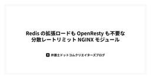

弁護士ドットコム株式会社 Creators’ blog
https://creators.bengo4.com/
弁護士ドットコムがエンジニア・デザイナーのサービス開発事例やデザイン活動を発信する公式ブログです。
フィード
業務の傍らで進める改善ループエンジニアリング
弁護士ドットコム株式会社 Creators’ blog
はじめに こんにちは、クラウドサイン Product Engineering 部の筒井（@ktsu2i）です。 CI/CD の高速化、パフォーマンス改善、リファクタリング、非推奨コードの修正、などなど... やった方が良いとわかっていながら手をつけられていない改善が、リポジトリのあちこちに転がっていませんか？ こうした改善は緊急度が低いものが多く、機能開発と優先度で競うとどうしても後回しになりがちです。 かといって、まとまった工数を確保して一気に片付ける方式もスケールしません。 そこで、通常業務の傍らで止まらずに改善し続ける仕組みが必要だと考えて、改善ループを作成することにしました。本記事では…
3日前

Redis の拡張ロードも OpenResty も不要な分散レートリミット NGINX モジュール
弁護士ドットコム株式会社 Creators’ blog
複数台の NGINX でレートリミットを共有するときに何が要るか NGINX 単体でリクエスト数を制限したいなら、標準の limit_req で足ります。 共有メモリにカウンタを持ち、ワーカープロセス間で状態を共有できるからです。 ロードバランサの背後に NGINX を複数台並べた瞬間、この前提が崩れます。 各ノードの共有メモリは互いに独立しています。 そのため、ノード A で 50 リクエスト、ノード B で 50 リクエストをそれぞれ許してしまい、利用者から見た合計は 100 リクエストになります。 台数を増やすほど、この漏れは大きくなります。 これを防ぐには、ノード間で状態を共有するカウ…
8日前

認可の呼び出しコードはほぼそのまま、評価だけ手元に寄せる Cedar 評価 PHP 拡張を作った
弁護士ドットコム株式会社 Creators’ blog
ポリシーで認可ルールを書く方式（PBAC）を PHP で組むとき、Amazon Verified Permissions（AVP） は魅力的な選択肢だ。PBAC は policy-based access control の略で、RBAC / ABAC をポリシー言語で統一的に書く考え方を指す。Cedar というよくできたポリシー言語をそのまま使え、ポリシーの管理から評価まで AWS が面倒を見てくれる。 ただ、実際に入れようとすると現実的な引っかかりがある。 リクエスト課金: 認可は「全リクエストで必ず通る」経路だ。ページ表示のたびに API を叩くため、トラフィックにほぼ比例してコストが乗…
10日前
dbt project evaluator をうまく使って dbt プロジェクトをベストプラクティスに近づける
弁護士ドットコム株式会社 Creators’ blog
こんにちは。データ本部の小倉です。主務は AI 技術開発部ですが、この記事は兼務先のデータ基盤開発部での取り組みについてです。 データ本部では、全社データ基盤「ODIN」のデータモデリング層を dbt で構築・運用しています（ちなみに ODIN という名前は私の発案です）。今回のテーマは、dbt プロジェクトの健全性を自動チェックしてくれる dbt project evaluator の導入です。蓄積していた負債を計画的に返済し、CI で再発を防ぐ仕組みを作るまでの流れを紹介します。 「全ルールをそのまま適用する」のではなく、自分たちのチームの制約と突き合わせてルールを取捨選択しつつ、必要に応…
12日前
隔離モデルによる仮想環境の分類 - Apple Container で Claude Code をサンドボックス化するまで
弁護士ドットコム株式会社 Creators’ blog
はじめに こんにちは。リーガルブレイン開発部の蛭川（@shotanue）です。 2025 年の WWDC で発表・公開された Apple Container が、先日の WWDC 2026 で v1 となりました。仮想環境といえば、従来は Docker のようなコンテナ環境や、VirtualBox のような ISO イメージから起動する仮想マシンを思い浮かべる人が多いはずです。すでに仮想環境を構築するツールは数多く存在するなかで、Apple Container は何が違うのでしょうか。 そこで本記事では、まず仮想環境を実現する方法のバリエーションを「隔離モデル」という観点から整理し、そのなかで…
16日前
MCP サーバーの認可を、自前で書かず NGINX で OAuth 2.1 Resource Server にする
弁護士ドットコム株式会社 Creators’ blog
MCP サーバーを書いていて、いざ「公開しよう」となった瞬間に手が止まったことはないだろうか。ツールの実装は終わっているのに、そこから先に待っているのは OAuth の仕様書の山だ。 この記事では、MCP の認可で要求される Resource Server (RS) の役割 を NGINX に担わせる。アプリ側のコードを 1 行も足さず、NGINX の設定だけで MCP サーバーを保護するところまでを、実際に動かしながら示す。読み終えたとき、あなたの手元では「トークン無しなら 401、正しいトークンなら通る」MCP エンドポイントが動いているはずだ。 対象は 自作の MCP サーバーを公開した…
17日前
国際会議 ICAIL+COLIEE 2026 参加レポート
弁護士ドットコム株式会社 Creators’ blog
データ本部 AI技術開発部の菅原です。 2026年6月8日から12日、シンガポールにて、AIと法律の国際会議 ICAIL（International Conference on Artificial Intelligence and Law）が開催されました。AI技術開発部で取り組んだCOLIEEの内容が論文として無事採択されたため、そのポスター発表を現地で行いました。 ICAIL 2026 の会場となったシンガポール経営大学 ICAIL および COLIEE とは ICAIL は1987年から続いている法律と人工知能に特化した国際会議です。今年はシンガポール経営大学（SMU）で5日間にわたっ…
22日前
dbt のメタデータを OKF でエージェントに渡すと、Agentic Analytics の精度は上がるのか
弁護士ドットコム株式会社 Creators’ blog
こんにちは。データ本部 AI 技術開発部の冨田です。 全社データ基盤「ODIN」連載の第3回 Agentic Analytics — AI に分析を任せる時代の基盤とコンテキストレイヤー では、AI に分析を任せる時代には「コンテキストレイヤー」が決定的に重要になる、というお話をしました。そのコンテキストレイヤーにとってキーとなるかもしれない技術が、最近 OKF（Open Knowledge Format） という形で発表されました。 この記事では、私たちがこれまで dbt で整備してきたメタデータを OKF に変換することで、ビジネスユーザーを想定した Claude Desktop からの …
1ヶ月前
Agentic Analytics — AI に分析を任せる時代の基盤とコンテキストレイヤー
弁護士ドットコム株式会社 Creators’ blog
こんにちは。弁護士ドットコムの CDO の川端です。 全社データ基盤「ODIN」の立ち上げやデータ戦略をテーマにした連載の最終回です。第 1 回では組織と基盤の立ち上げを、第 2 回では AI 技術開発部の冨田が「コードで管理するデータ基盤」を技術寄りに解説しました。最終回となる今回は、作った基盤を「使う側」の未来、Agentic Analytics についてお話しします。 結論を先にお伝えすると、AI に分析を任せる時代において、データ基盤とコンテキストレイヤーは決定的に重要になります。なぜそう考えるのか、私たちの実例とともにご紹介します。 この連載について Agentic Analytic…
1ヶ月前
Legal Brain エージェントが司法試験予備試験論文式で「最上位合格水準※」を取りました！
弁護士ドットコム株式会社 Creators’ blog
こんにちは。弁護士ドットコムで「Legal Brain エージェント」のHead of Product（製品責任者）をしています、稲垣（@YujiInagaki1）です。 司法試験予備試験論文式 で「最上位合格水準※」 先日(6/22)、下記の発表をさせていただきました。 prtimes.jp 「司法試験予備試験」は国内最難関の国家試験です。合格率は約3〜4%。今回、司法試験指導校大手「伊藤塾」様に採点していただき、「最上位合格水準※」という評価をいただくことができました。 ※本試験の公式得点は、受験者全体を対象とした採点格差調整を経て算出されます。本リリースの375点（伊藤塾の採点による点数…
1ヶ月前
少人数でスケールさせる「コードで管理するデータ基盤」— Tableau as Code と社内ツールの実践
弁護士ドットコム株式会社 Creators’ blog
こんにちは。データ本部AI技術開発部の冨田です。 全社データ基盤「ODIN」の立ち上げやデータ戦略をテーマにした連載の第2回です。第1回では、入社当時の「データ分断」から、全社横断のデータ基盤と3部体制が立ち上がるまでを振り返りました。その中で挙げた3つの戦略のうち、最後の「すべてをコード管理する」を、今回は技術寄りに深掘りします。 500を超えるデータソースと1,250を超えるデータモデルを、数名の組織でどう運用しているのか。その答えの中心にあるのが「コードで管理する」という思想です。 この連載について なぜ「すべてをコード管理」するのか 1つのリポジトリにすべてを集約するモノレポ構成 PR…
1ヶ月前
全社データ基盤「ODIN」をゼロから立ち上げるまで — 組織と戦略の話
弁護士ドットコム株式会社 Creators’ blog
こんにちは。弁護士ドットコムで CDO を務めている川端です。 この記事から 3 回にわたって、私たちが取り組んできた全社データ基盤の構築についてお話しします。第 1 回では、私が入社した当時の状況から、全社横断のデータ基盤「ODIN（オーディン）」と 3 部体制のデータ組織がゼロから立ち上がるまでを振り返ります。 少人数のチームで何を考え、どう手を動かしてきたのか。これからデータ基盤づくりに取り組む方々の参考になればと思い、まとめました。 この連載について 私たちが向き合っている事業環境 入社当時、データは「分断」状態だった なぜ、全社のデータを統一する基盤が重要なのか 急成長期に取った 3…
1ヶ月前
NGINX 単体で宣言的認可を完結させる Cedar モジュールを作った
弁護士ドットコム株式会社 Creators’ blog
NGINX のエッジで、外部プロセスやネットワークホップなしに、属性ベースの認可（ABAC）を宣言的なポリシーで書けるようにする。 それが nginx-auth-cedar という OSS 動的モジュールだ。ポリシー言語には AWS 発の標準言語 Cedar のサブセットを採用し、その評価エンジンを C で自作した。 この記事は「なぜ作ったか」「何が書けるか」「どう設定するか」、そして認可設計者が本番採用を判断するうえで一番気になるであろう「どう作られているか（設計判断）」を話す。最後に試し方まで。 なぜ作ったか ― NGINX 認可の空白 NGINX の認証（AuthN）まわりは充実している…
1ヶ月前
TSKaigi2026 協賛&参加レポート
弁護士ドットコム株式会社 Creators’ blog
クラウドサイン Product Engineering 部でエンジニアをしている比嘉（@teitei_tk）、辻 (@t0daaay)です。好きな規格はIEEE802.11です。 2026年5月22日(金)・23日(土)に開催された TSKaigi2026 に、弁護士ドットコムはBronzeスポンサーとして協賛しました。 2026.tskaigi.org 6/12(金)にはウェルスナビ様/ スリーシェイク様/PeopleX様/エブリー様/弁護士ドットコムにてアフターイベント、「TSKaigi2026〜アフターパーティー〜」 を開催します。 every.connpass.com TSKaigiの…
2ヶ月前
800リポジトリを1年半で GitLab Self-Managed から GitHub Enterprise Cloud へ移行した話
弁護士ドットコム株式会社 Creators’ blog
弁護士ドットコム Platform & Reliability Engineering 部で、開発基盤の整備や改善に取り組んでいる櫛部です。 Platform & Reliability Engineering 部は、SRE と Platform Engineering の 2 つの職能を軸にしています。開発組織全体の生産性と信頼性を支える基盤チームです。 職能 主な役割 SRE 各環境の監視、障害対応、信頼性向上 Platform Engineering クラウド基盤の管理、CI/CD、リポジトリ管理、共通基盤の整備 このうち Platform Engineering の領域では、CI/CD…
2ヶ月前
「象・死んだ魚・嘔吐」を試して気づかされた——手法の前に必要なもの
弁護士ドットコム株式会社 Creators’ blog
はじめに こんにちは。弁護士ドットコムでエンジニアをしている西岡です。 みなさんは日々の振り返りはどのような手法で行っていますか。 私が所属するチームでは、普段の振り返りで扱いにくい課題があり、それに対して「象・死んだ魚・嘔吐」という振り返り手法を試しました。 今回は、実施してみて、こうした手法をより機能させるうえで大事にしたいことが見えてきたので、その学びをまとめました。 以下のような人の参考になれば幸いです。 振り返り手法「象・死んだ魚・嘔吐」に興味がある人 スクラムイベントを工夫しているのに、なぜか問題が解決しないと感じている人 はじめに 普段の振り返りで気になっていたこと 「象・死んだ…
2ヶ月前
macOSで0から作るNeovim開発環境 — LazyVim編
弁護士ドットコム株式会社 Creators’ blog
はじめに Claude CodeやCodex CLI、Gemini CLIといった、ターミナルで動くAIコーディングエージェントが一気に増えてきました。これらはCLIをインターフェースにしているので、AIに任せる比重が増えるほど自分の作業場もGUIからターミナルへ寄っていきます。エージェントが書いたコードを眺めたり、ログを追ったり、ちょっとした修正を手で入れたりを、ターミナル上で気持ちよくこなせると開発体験がぐっと楽になります。 この記事は、VSCodeなどのGUIに慣れた人が「ターミナル側に軸足を置いてみるか」と踏み出すための最初の一歩として書いています。エディタにNeovim (LazyV…
2ヶ月前
LLMが使えない：科学論文向け手法を判例に適用して要約精度を上げた話
弁護士ドットコム株式会社 Creators’ blog
データ本部AI技術開発部でリーガルブレインの開発に携わっている菅原です。 LLM のコンテンツフィルターに弾かれて要約できない判例がありました。代替として抽出型要約を試したところ、科学論文向けの手法をそのまま適用しても精度が出ず、判例の構造に合わせて位置仮説を書き換えることで改善した話を紹介します。 背景 LLMが使用できないケース 抽象型要約と抽出型要約 LexRankとHipoRank 実験設定 タスク設定 構造の明確化：旧様式と新様式 データ分割 まずは素直に LexRank と HipoRank を比べた HipoRank の仮説は判例に適用できるのか 判例向けに HipoRank の…
3ヶ月前
nginx にロールベースアクセス制御を追加する ── nginx-auth-rbac モジュールの紹介
弁護士ドットコム株式会社 Creators’ blog
nginx で REST API やアプリケーションを公開していて、エンドポイントごとにアクセス制御を加えたいと考えたことはないでしょうか。 アプリケーション側の middleware で if 文を積み重ねていたり、そもそも認可の仕組みがなく API がオープンな状態だったり。そこで、nginx の設定ファイルだけで「このロールにはこのパス・メソッドだけ許可する」を実現する RBAC（ロールベースアクセス制御）モジュールを開発しました。 GitHub: nginx-auth-rbac 既存の選択肢と、その「ちょうどいい」が存在しなかった話 nginx でアクセス制御を実現する方法はすでにいく…
3ヶ月前
AIが自分の失敗を観察し、自分で直す ─ CRE が組み込んだ Agent Skills 自己改善の仕組み
弁護士ドットコム株式会社 Creators’ blog
CREが運用するAI Agent Skillsに自己改善ループを組み込んだ。AIが自分の失敗を観察・記録し、別のAIがログを読んで修正する。スキルを「作って終わり」から「育てる」に変えた設計と考え方。
3ヶ月前
ヘルプデスクに「AI マネージャー」を ─ CRE × Agent Skills で俯瞰から傾向分析まで
弁護士ドットコム株式会社 Creators’ blog
CRE チームのヘルプデスク運用を支える AI エージェントスキル helpdesk-status の紹介。Jira・HubSpot・Slack を統合し、日々の状況確認から月次の傾向分析・再発テーマの検出までを AI に問い合わせられる仕組みの機能と設計を解説します。
4ヶ月前
アラート対応の属人化からの脱却 ― Devin Playbookによる調査・修正の自動化
弁護士ドットコム株式会社 Creators’ blog
はじめに Web サービスを運用していると、アラート通知は日常的に発生します。Datadog のモニターが検知し、Slack チャンネルにエラー通知が流れる。それ自体は健全な仕組みですが、通知を受けてから実際に調査・対応するまでのプロセスには、いくつかの地味な課題がありました。 本記事では、AI ソフトウェアエンジニアであるDevinの Playbook 機能を使い、Slack のアラート通知スレッドからアラート調査と修正対応を行える仕組みを作った取り組みを紹介します。 前提：対象サービスの特性 アラート対応の対象となるサービスは、歴史のあるモノリシックな Web アプリケーションです。長年に…
4ヶ月前
GitHub Actionsでstaging反映を自動化してCI事故をなくした話
弁護士ドットコム株式会社 Creators’ blog
staging automationこんにちは。弁護士ドットコムでエンジニアをしている @bhujel（ブゼル）です。 私が所属するチームでは、約 20 名のエンジニアが 1 つの巨大なコードベースで並行開発を行っています。配属されて最初に直面した課題は、CI（ビルド・テスト・各種チェック）の長さでした。完了までに約 30 分。長年の蓄積もあり、CI の高速化はすぐには難しい状況でした。 この環境で特に運用負荷が高かったのは、staging 環境（検証環境）への反映フローでした。今回は、GitHub Actions を活用してこのフローを自動化し、開発者体験（DX）を向上させた取り組みをご紹介…
4ヶ月前
「書いただけで満足」はもう終わり。esaのナレッジをGemini Gemで「生きた知恵」に変える自動化術
弁護士ドットコム株式会社 Creators’ blog
はじめに こんにちは、 弁護士ドットコム株式会社で、クラウドサインという電子契約サービスのバックエンドを担当しているブイ・ザイン・トゥンと申します。 突然ですが皆さんのチームでは、日々のナレッジを本当に活用できていますでしょうか。 日本には「ドキュメントなら Google Drive や Notion、esa といったツールにたっぷり蓄積されているよ！」というチームが多いはずです。しかし、いざという時にこんな状況に陥っていないでしょうか。 「あの障害の対応手順、確か esa にあったはずだけど…タイトルを忘れて見つからない」 「数年前の記事が埋もれてしまい、貴重なノウハウが眠ったデータになって…
4ヶ月前
制約を読まないエンジニアへ
弁護士ドットコム株式会社 Creators’ blog
@h13web です。 昨年の秋に、「グローバル展開にむけたアプリと基盤の再構築」という技術ブログを読みました。日本を代表するテック企業であるメルカリが、グローバル展開のための基盤を刷新したという話です。 この中で語られている「Microservicesの課題」については、思うところがありました。実は弁護士ドットコムでも、かつて似たような体験をしています。モノリスをマイクロサービスに分割するプロジェクトがあり、内部設計より疎結合化が優先され、ドメインを横断するコンテキストが各サービスにコピーされ、開発速度はモノリスのときよりもむしろ落ちました。 その体験を思い起こしながら読み進めるうち、うまく…
4ヶ月前
「AIエージェント元年」をまるごと育休で過ごしたエンジニアの復帰記
弁護士ドットコム株式会社 Creators’ blog
「AIエージェント元年」をまるごと育休で過ごしたエンジニアの復帰記 この記事について リーガルブレイン開発部ライブラリ開発チームのエンジニア k-anz です。私は、2024 年 9 月〜2025 年 12 月まで約 1 年 3 ヶ月の産休・育休を取得していました。 つまり「AI エージェント元年」と呼ばれた 1 年間を、まるまるソフトウェア開発の現場から離れていたことになります。 さらに私にとって大きな変化だったのは、復帰に伴う「役割」の変化でした。育休前はマネージャーとしてチームを率いていましたが、復帰後は一人のメンバー（IC）として、再び現場でコードを書く役割を担うことになったのです。 …
4ヶ月前
Agent Deck を使った AI エージェント管理
弁護士ドットコム株式会社 Creators’ blog
はじめに こんにちは。リーガルブレイン開発部ライブラリ開発チームの大川です。 Claude Code や Codex などの AI エージェントを使ってコーディングしていると、複数のエージェントを並行して動かしたくなることがあります。 しかし、油断していると AI エージェントを動かしているターミナルのウィンドウは再現なく増え続けます。 次第にどこで何のエージェントが動いているか把握しきれなくなり、管理が困難になるという状態にしばしば頭を悩ませていました。 そんな中で Agent Deck を使い始めてから AI エージェントの管理が楽になったので、使い方をまとめておきます。 はじめに 課題感…
4ヶ月前
AI活用を“個人技”で終わらせない：リポジトリプロンプト運用ガイドライン整備の実践
弁護士ドットコム株式会社 Creators’ blog
AI活用を“個人技”で終わらせない：リポジトリプロンプト運用ガイドライン整備の実践 こんにちは。弁護士ドットコムで弁護士ドットコムサービス (https://www.bengo4.com) の開発をしている松澤です。 個々人の AI コーディングの知見を共有資産化するため、リポジトリ依存のプロンプト（以降、リポジトリプロンプト）の運用ガイドラインを整備した話を紹介します。 AI活用を“個人技”で終わらせない：リポジトリプロンプト運用ガイドライン整備の実践 きっかけ やりたいことの整理 障壁と解決策 障壁：同じリポジトリを複数のチームが触っている 障壁：Cursor と Claude Code …
4ヶ月前
業務品質を向上させるSalesforceデータアクセス術：迅速かつ正確な情報把握
弁護士ドットコム株式会社 Creators’ blog
はじめに こんにちは、社内でSalesforceの開発・保守運用を担当しているシステム企画部のHです。 ご存知の方も多いかと思いますが、Salesforceは世界シェアNo.1のCRM（顧客関係管理）プラットフォームです。 そして、CRMの本質は「データの蓄積」とその「活用」にあります。 私たちが日々向き合っているのは、単なるレコードの羅列ではありません。そこにあるデータはビジネスの現状そのものです。 そのため、システムの改修や不具合調査を行う際、まず「現状のデータがどうなっているか」を深掘りすることから始めることが多いです。 データを見ていると、以下のようなシーンに遭遇します。 「なぜ、この…
4ヶ月前
問い合わせに答えても困りごとは消えない - CRE の課題整理の考え方と Agent Skills への展開
弁護士ドットコム株式会社 Creators’ blog
問い合わせは症状、困りごとは奥にある。WHO・WHAT・影響・発生条件を起点に課題を構造化する CRE の考え方と Agent Skills 実装を紹介。
4ヶ月前